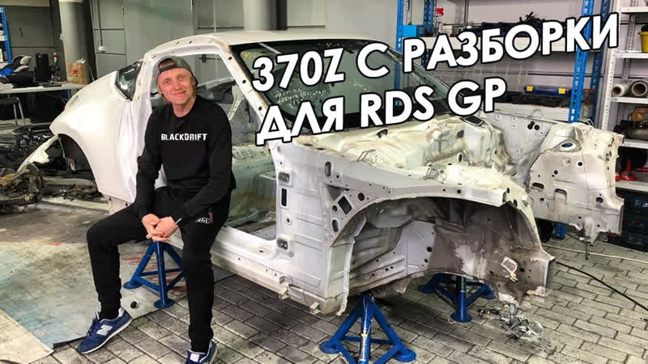

Добро пожаловать на блог о дрифте!
Главная сраница. Другие статьи.
На этом сайте вы сможете узнать самые последние новости о дрифте.
Ютуб канал с крутой музыкой для дрифта
Цареградцев строит Nissan 370z с РАЗБОРКИ. <

Красноярский дрифтер Аркадий Цареградцев анонсировал новый проект, который готовится к сезону RDS GP 2020 года. Вместо Nissan Skyline GT-R R34 по прозвищу BadAss, на котором пилот выступал в последние годы, будет построен дрифт-кар на базе купе Nissan 370Z.
«Ну вот и настало время нового шасси! Идеологический преемник цифры 34, мой маленький 35-й GT-R, встречайте — BadAss VR-Z! Для мало разбирающихся — это Nissan 370Z (кузов Z34). Конструктивно это фактически 35-й, только очень компактный и правильный по соотношению длина/ширина (колёсная база S15 — 2525 мм, Z34 — 2550 мм). По подвеске есть крутейшее решение от Wisefab и Feal Suspension, мотор будет со «Ская», но полностью перестроенный по новым технологиям, кузов почти весь из карбон/кевлара.